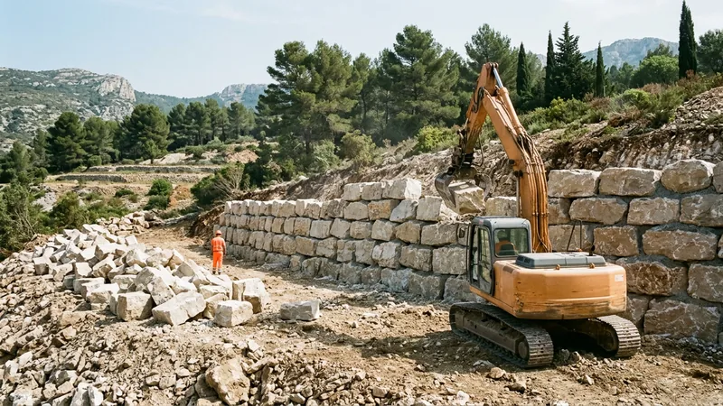

Prix de l'enrochement à la tonne : pierre, transport et pose

L'enrochement est l'un des rares ouvrages de terrassement qui se chiffre de trois façons différentes : à la tonne, au mètre carré de parement, ou au mètre linéaire. Deux devis pour le même mur peuvent donc afficher des nombres sans rapport apparent et être tous les deux justes. Savoir passer de l'un à l'autre est la seule manière de les comparer.
Ce guide détaille ce que coûte réellement une tonne de pierre en 2026 dans les Bouches-du-Rhône, poste par poste : la pierre en carrière, le transport — souvent sous-estimé —, et la pose. Il donne ensuite la conversion vers le mètre carré de parement, la seule unité qui permette de comparer un enrochement à un mur en béton ou à des gabions.
Pourquoi l'enrochement se chiffre à la tonne
Parce que la pierre s'achète et se transporte au poids. Une carrière vend à la tonne, un camion se charge à la tonne, et la pelle qui pose se paie à l'heure — donc, indirectement, au tonnage déplacé. Le mètre carré de parement, lui, est une commodité de comparaison pour le client : il ne correspond à aucune facture du chantier.
La conséquence pratique est importante : un devis exprimé uniquement au mètre carré masque le calibre des blocs. Or c'est le calibre qui détermine la tenue de l'ouvrage. Deux murs de même surface, l'un en blocs de 300 kg, l'autre en blocs de 1,5 tonne, n'ont ni la même stabilité ni le même prix — et le second consomme deux fois plus de tonnes.
Le prix de la pierre en carrière
Le prix de départ carrière dépend de la roche, du calibre et du tri. Dans les Bouches-du-Rhône, le calcaire local domine ; il est à la fois le moins cher et le plus cohérent avec le paysage.
| Type de blocs | Poids unitaire | Prix départ carrière | Usage |
|---|---|---|---|
| Enrochement non trié (tout-venant) | 50 à 400 kg | 14 à 24 €/t | Remblai, protection de berge |
| Calibre 300/600 kg | 0,3 à 0,6 t | 22 à 34 €/t | Talus jusqu'à 1,5 m |
| Calibre 600/1200 kg | 0,6 à 1,2 t | 26 à 40 €/t | Soutènement courant |
| Blocs cyclopéens (> 1,5 t) | 1,5 à 4 t | 32 à 50 €/t | Grande hauteur, forte poussée |
| Pierre sélectionnée (face plane, teinte homogène) | variable | 45 à 80 €/t | Enrochement paysager visible |
Le terme cyclopéen désigne simplement les très gros blocs, au-delà d'une tonne et demie. Ils ne sont pas systématiquement meilleurs : au-delà d'un certain poids, il faut une pelle plus grosse pour les manipuler, ce qui renchérit la pose davantage que la pierre elle-même. Ils s'imposent quand la hauteur dépasse 2,5 à 3 mètres ou quand la poussée est forte.
Le transport : le poste que personne n'anticipe
C'est la mauvaise surprise classique. Un semi-remorque transporte 25 à 28 tonnes par rotation. Le coût de rotation, dans la région, se situe entre 250 et 500 € selon la distance, ce qui ramène le transport à une fourchette large :
| Distance carrière → chantier | Coût par tonne | Sur 40 tonnes |
|---|---|---|
| Moins de 10 km | 8 à 12 €/t | 320 à 480 € |
| 10 à 25 km | 11 à 17 €/t | 440 à 680 € |
| 25 à 50 km | 16 à 24 €/t | 640 à 960 € |
| Accès difficile (petit porteur obligatoire) | + 30 à 60 % | — |
L'accès conditionne tout. Si un semi ne peut pas atteindre le chantier, la livraison se fait en petit porteur de 8 à 12 tonnes : il faut trois à quatre fois plus de rotations pour le même tonnage. Sur un chantier de colline avec un accès étroit, le transport peut représenter autant que la pierre elle-même. C'est la première question à poser avant de comparer deux devis.
La pose : ce que fait réellement le pelliste
La pose se facture au temps passé, converti en tonnage posé. Elle comprend le terrassement de l'assise, la mise en place du géotextile et du drain, le calage bloc par bloc et le remblaiement drainant à l'arrière.
- Pose simple, enrochement de talus : 30 à 50 €/t
- Pose soignée, parement visible et blocs appareillés : 45 à 75 €/t
- Grande hauteur ou blocs cyclopéens (pelle de 30 t) : 55 à 90 €/t
Un enrochement correctement posé n'est pas un empilement. Chaque bloc porte sur deux blocs de l'assise inférieure, les joints sont décalés, et le mur présente un fruit — une inclinaison vers le talus — de 10 à 20 %. C'est ce fruit qui fait tenir l'ouvrage : un enrochement vertical travaille comme un mur, alors qu'il n'en est pas un.
Le drainage à l'arrière est non négociable. Un enrochement sans drain ni géotextile devient un barrage : l'eau s'accumule derrière, la poussée augmente, et les blocs basculent un par un. Le détail de la mise en œuvre figure dans notre guide sur le choix des pierres et la pose.
Prix total à la tonne, posé
| Type d'ouvrage | Prix à la tonne, posé |
|---|---|
| Enrochement de protection, blocs non triés | 55 à 85 €/t |
| Enrochement de soutènement courant, 600/1200 | 70 à 110 €/t |
| Enrochement paysager, pierre sélectionnée | 95 à 150 €/t |
| Blocs cyclopéens, grande hauteur | 100 à 160 €/t |
Convertir les tonnes en mètres carrés de parement
C'est la conversion qui permet enfin de comparer un devis d'enrochement à un devis de mur en béton ou de gabions. La règle de terrain est simple :
1 m² de parement d'enrochement représente environ 1,5 à 2 tonnes de pierre.
L'épaisseur du mur croît avec sa hauteur : un enrochement de 1 mètre a une base d'environ 0,7 mètre, un enrochement de 3 mètres une base de 1,5 à 2 mètres. Le ratio de 1,5 t/m² correspond aux ouvrages bas, celui de 2 t/m² aux ouvrages hauts.
| Hauteur du mur | Tonnes par m² de parement | Prix au m² correspondant |
|---|---|---|
| 1 m | 1,3 à 1,6 t | 95 à 175 €/m² |
| 2 m | 1,6 à 1,9 t | 115 à 210 €/m² |
| 3 m et plus | 1,9 à 2,3 t | 145 à 280 €/m² |
Ces valeurs recoupent la fourchette de 100 à 200 €/m² que nous donnons dans notre guide de l'enrochement paysager : c'est bien le même ouvrage, exprimé dans l'autre unité.
Exemple chiffré : un soutènement de 20 mètres sur 1,80 m
Surface de parement : 20 × 1,80 = 36 m². À 1,7 t/m², il faut environ 61 tonnes de blocs calibrés 600/1200.
| Poste | Prix unitaire | Total |
|---|---|---|
| Pierre départ carrière | 32 €/t | 1 952 € |
| Transport (3 rotations de semi) | 14 €/t | 854 € |
| Terrassement de l'assise et évacuation | forfait | 900 à 1 500 € |
| Géotextile et drain à l'arrière | forfait | 450 à 800 € |
| Pose à la pelle | 48 €/t | 2 928 € |
| Total | — | 7 100 à 8 050 € |
Soit 197 à 224 €/m² de parement, ou 116 à 132 €/t tout compris. Le chiffre est dans le haut des fourchettes parce que le terrassement d'assise et le drainage sont ici des forfaits qui s'amortissent mal sur 20 mètres seulement ; sur 60 mètres, le prix au mètre carré baisserait de 15 à 20 %.
Réglementation : au-delà de quelle hauteur ?
Un enrochement qui soutient des terres est un ouvrage de soutènement. Au-delà d'une certaine hauteur, généralement 2 mètres, une déclaration préalable est demandée par la plupart des communes, et le règlement du PLU peut imposer des règles de retrait ou d'aspect. Au-delà de 3 à 4 mètres, ou si l'ouvrage soutient une construction, une note de calcul par un bureau d'études s'impose.
Source officielle : la fiche officielle de la déclaration préalable de travaux.
Questions fréquentes
Combien coûte une tonne d'enrochement en 2026 ?
Départ carrière, comptez 14 à 24 €/t pour des blocs non triés et 26 à 40 €/t pour un calibre 600/1200 en calcaire local. Livrée et posée, la même tonne revient entre 70 et 110 € pour un soutènement courant. L'écart entre le prix carrière et le prix posé — souvent un facteur trois — s'explique par le transport et par le temps de pelle : une pelle qui pose de l'enrochement soigné place rarement plus de 15 à 25 tonnes par jour.
Combien de tonnes d'enrochement pour 10 mètres de mur ?
Pour 10 mètres linéaires sur 1,5 mètre de haut, soit 15 m² de parement, comptez environ 25 tonnes (1,6 t/m²). Sur 2,5 mètres de haut, la même longueur demande environ 47 tonnes, car l'épaisseur du mur augmente avec la hauteur. Ajoutez 5 à 10 % de marge : le calage impose toujours quelques blocs de complément.
Quelle différence de prix entre enrochement et mur en béton ?
À hauteur égale, l'enrochement revient généralement 20 à 40 % moins cher qu'un mur en béton armé avec semelle, parce qu'il n'exige ni coffrage, ni ferraillage, ni temps de séchage. Son avantage diminue quand l'emprise au sol est contrainte : un enrochement a besoin d'une base large, là où un mur en béton reste mince. Sur un terrain étroit, le béton redevient compétitif.
Qu'est-ce qu'un enrochement cyclopéen ?
C'est un enrochement composé de blocs de plus de 1,5 tonne, souvent 2 à 4 tonnes. Il est réservé aux grandes hauteurs et aux fortes poussées : la masse propre des blocs assure la stabilité. Son surcoût vient moins de la pierre (32 à 50 €/t) que des moyens de levage : il faut une pelle de 25 à 35 tonnes, dont la journée coûte le double d'une pelle de 14 tonnes.
Peut-on récupérer les pierres d'un terrain pour l'enrochement ?
Parfois, et l'économie est réelle puisqu'elle supprime pierre et transport. Deux conditions : que les blocs soient assez gros — en dessous de 200 kg ils ne servent qu'au remblai — et qu'ils soient suffisamment sains, un calcaire délité se fendra au calage. Sur un terrassement en terrain rocheux, le tri des blocs extraits se décide sur place, au fur et à mesure de l'extraction.
L'enrochement doit-il être drainé ?
Toujours, dès qu'il retient des terres. Un géotextile contre le talus empêche les fines de migrer entre les blocs, et un drain en pied évacue l'eau vers un exutoire. Sans ce dispositif, la pression hydrostatique derrière l'ouvrage augmente à chaque épisode pluvieux et finit par déchausser les blocs de la base : c'est la cause la plus fréquente de ruine d'un enrochement en Provence, où les pluies sont rares mais violentes.
Un enrochement à chiffrer ?
STP Terrassement réalise les enrochements de soutènement et paysagers dans les Bouches-du-Rhône. Nous chiffrons la pierre, le transport et la pose séparément, pour que vous sachiez ce que vous payez.
Pressé ? 07 45 14 20 49 ou WhatsApp